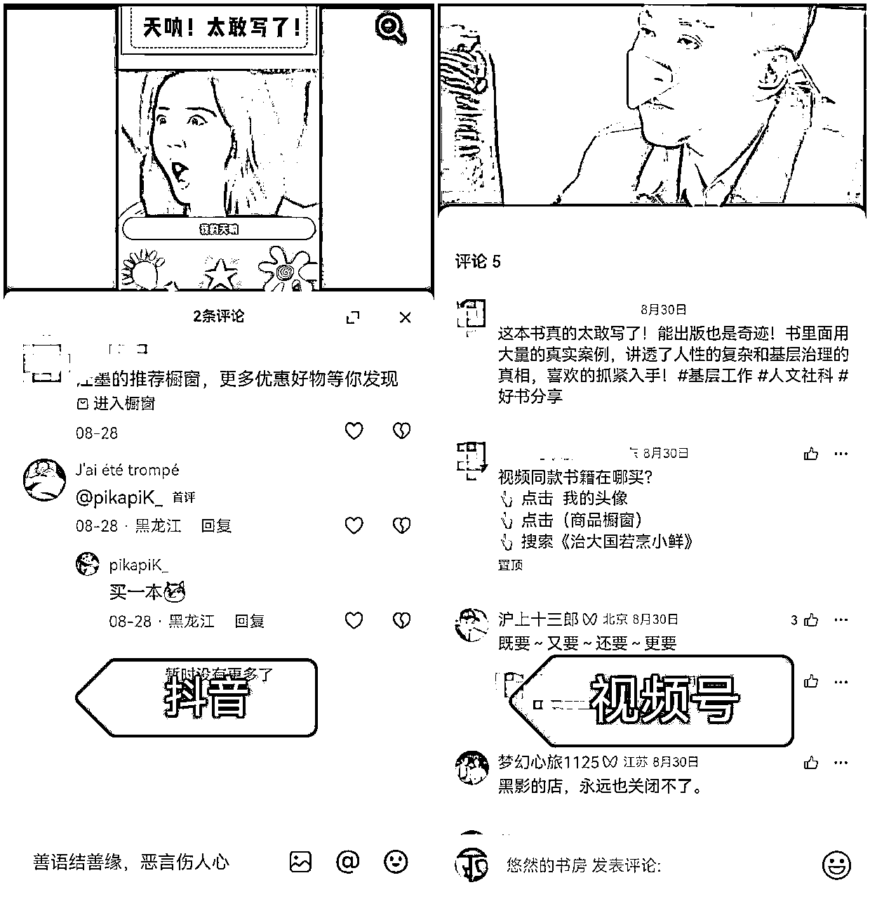

来源：https://qq8alk00fg.feishu.cn/docx/ExpsdRibSoo7L7xJkXXcuOKJnMe
想要日进斗金的可以划走，这个项目不同于生财里各路大佬的项目能赚的盆满钵满，这个只适合刚进入生财想要赚到第一块钱、建立搞钱信心的人～
之所以分享：一是我当时作为新人小白刚进入生财，真的有种“刘姥姥进大观园”——眼花缭乱，觉得生财就是大宝藏，啥项目都有，感觉自己干啥都能赚钱，然后各种尝试各种碰壁拿不到结果，尤其又看到那么多老是月入十万百万的，看的人都焦虑。。。。。。所以非常需要赚到“第一块小钱钱”、拿到正反馈坚持下去；二是这个项目从“我决定尝试”到“拿到结果”就用了3天，快到我都不敢信！！因为真的是非常简单！有手就行！！！
本质上就是短视频带货，只不过是混剪影视画面来带书。书籍类别很多，我经过测试，发现社科政史类的相对文学的没那么卷，对新人很友好，能在短时间内出单。社科政史类书籍的佣金比例一般在20%～25%，这是直接跟出版社/图书公司合作的定向佣金，如果跟图书店铺会更高，大概35%-50%甚至更高（因为售价提高）。
在测试这个玩法时，因为还有其他的事情要做，也不是日更，一共发了10条视频，用了2个视频号1个抖音（都是很早之前的老号，没有内容，两位数的粉），无法挂车，也没有发任何流量视频养号涨权重，上来直接发带书视频，评论区引导购买。
下面是我8.28发的第一条剧综视频，视频号在第三天，就是8.30视频号开始出单；
抖音也是8.28发布的第一条视频，不过出单晚一些，到9.15才开始出单；
注册抖音/视频号账号 ➡️ 选品 ➡️ 文案制作 ➡️ 搜集画面素材 ➡️ 视频剪辑 ➡️ 发布 ➡️ 新号不到千粉评论区置顶引导（过了千粉直接挂车）
一个手机号可以1个视频号1个抖音号，都需要实名，1个身份证可以实名2个视频号账号、1个抖音号账号，不够的建议让家人朋友帮忙实名一下就行。（视频号航海手册账号准备 生财有术网页版）
✍️ 一般来讲，一本书在刚刚起量的2周半销量和转化率都是最好的，最高能到50%～55%，第三周开始品的热度就慢慢下去了。所以第二轮筛选的原则就是结合品的热度周期和下单转化率，按递减的顺序去选择要带的品。
📍敲重点：尽管前面说政史社科类型的好出单，没那么卷，但是如果有高客单的，且刚刚起量的品，一定要去尝试，因为佣金高！
最深有一个近2000万浏览量的问题，你曾经误会最深的一个历史人物是谁？大部分人的答案都指向了教员。
我本以为教员恰同学少年风华正茂，但真实的教员也曾被孤立排挤。
教员写道，“由于我的职位低下，人们都不愿同我来往，他们大多都不把我当人看待，他们没时间听一个图书管理员讲南方土话，但是我并不灰心，我参加了哲学会和新闻学会，为的是能够在北大旁听。”
我原本以为教员的一生从未迷茫，而真实的教员曾考虑去做肥皂商，做律师，成为商业精英，最终选择了师范，本只想当个教书匠，但翻开历史一查，这历史没有年代，歪歪斜斜的每页上都写着，呜呼，中国即将亡矣。我泱泱中华，不该败于自甘沦陷。吾辈任重而道远，国家兴亡，匹夫有责，愿做萤萤之光，点通天之亮。
教员的文字朴实又有力量，每当我迷失在黑夜里，教员有如黑夜中最亮的星，指引我前行。
强烈推荐这本绝版多年后重新增印的毛泽东自述，国内唯一一部教员自己口述的传记，真实记录了教员在列强环伺，军阀混战的混沌年代觉醒。看一个不起眼的山村少年，竟可这般翻天覆地，扭转乾坤。人生难得的力量之书，千万不要错过。
在你不确定脚下的路该怎么走的时候，去听听教研这段话：
他说，“父亲当众骂我懒而无用，这一下激怒了我，离家出走了。
听说这个城很大，有许许多多的人和不少学校，很多阔学生看不起我，因为我平时只穿一身破旧的衫裤。我以前的老师介绍我到北大图书馆做助理，由于我的职位低下，人们都不愿同我来往，他们大多都不把我当人看待，但是我并不灰心，我参加了哲学会和新闻学会，为的是能够在北大旁听，万事都会有一个过程，必须从实践出发，从没有经验到有经验，从有较少的经验到有较多的经验，逐步克服盲目性，认识客观规律，从而获得自由。冒险、探索、发现，像火焰一样贯穿这一切的是成千上万的青年的持久不衰的热情，不灭的希望和惊人的乐观主义。”
教员的文字总有一种向死而生的无限生命力。每当我迷失黑暗里，教员有如黑夜中最亮的星，照亮我前行的路。
强烈推荐这本绝版多年后重新增印的毛泽东自述，国内唯一一部教员自己口述的传记，书中真实记录了教员如何从帝国主义，封建主义统治下的黑暗旧社会斗争过来，以及他如何从贫穷少年一步步成为伟大领袖的历程。身处迷茫的你，一定不要错过。
在你不确定脚下的路该怎么走的时候，就听听教员这段话吧，
他说，“我父亲决定送我到湘潭县一家米店去当学徒，可是我听说有个与众不同的新式学校，于是决心不顾父亲的反对，到那里去上学。孩儿立志出乡关，学不成名誓不还。埋骨何须桑梓地？人生无处不青山。后来我在师范学校读了，拿到了毕业文凭。我以前学校的老师介绍我到北大图书馆做助理，由于我的职位低下，人们都不愿同我来往。我的职责中有一项是登记来图书馆读报人的姓名，可是他们大多都不把我当人看待，但是我并不灰心，我参加了哲学会和新闻学会，为的是能够在北大旁听，万事都会有一个过程的，必须从实践出发，从没有经验到有经验，从有较少的经验到有较多的经验，逐步克服盲目性，认识客观规律，从而获得自由，冒险、探索、发现，像火焰一样贯穿这一切的，是经久不衰的热情不灭的希望和惊人的乐观主义。”
教员的文字总有一种向死而生的无限生命力，每当我迷失黑暗里，教员有如黑暗中最亮的星，照亮我前行的路。
强烈推荐这本绝版多年重新增印的毛泽东自书，国内唯一一部教员自己口述的传记。
书中真实记录了教员如何从列强环伺，军阀混战的黑暗旧社会会中奋力抗争，以及他如何从一个不起眼的山村少年蜕变为伟大领袖的历程，身处迷茫的你，一定不要错过。
🌲 改出的文案：
当你身处低谷时，不妨听听教员这段话，他说，
我父亲决定送我到湘潭县一家米店去当学徒，可是我听说有个与众不同的新式学校，于是决心不顾父亲的反对，到那里去上学。
后来我在师范学校读了，拿到了毕业文凭。我以前学校的老师介绍我到北大图书馆做助理，由于我的职位低下，人们都不愿同我来往。我的职责中有一项是登记来图书馆读报人的姓名，可是他们大多都不把我当人看待，他们没时间听一个图书管理员讲南方土话，但是我并不灰心，我参加了哲学会和新闻学会，为的是能够在北大旁听。
万事都会有一个过程，必须从实践出发，从没有经验到有经验，从有较少的经验到有较多的经验，逐步克服盲目性，认识客观规律，从而获得自由。
冒险、探索、发现，像火焰一样贯穿这一切的是成千上万的青年的持久不衰的热情，不灭的希望和惊人的乐观主义。
教员的内心真的太强大了！真的太有力量了！每当我遇到挫折感到迷茫，身处低谷不知道做什么的时候，教员的这些话总能带给我很多能量，为我点明前进的方向，让我满血复活！
强烈推荐这本绝版多年后重新增印的伟人自述，也是国内唯一一部由教员自己口述的传记。难得的人生力量之书，千万不要错过！
抖音后台发布：抖音内容创作者中心
上传、填写标题、简介、带上话题，直接发布即可～
视频号后台发布：视频号助手
填写标题、话题即可发布，“声明原创”🚫不要勾选
新号不到千粉评论区置顶引导（过了千粉直接挂车）

以上，希望新手小伙伴尽快拿到正反馈，如果有哪里有什么疑问可以留言，会一一给你解答～